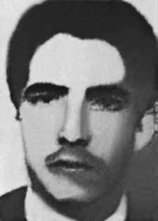

James
Allen
Luz
CIRCUNSTÂNCIAS DA MORTE
James Allen da Luz desapareceu em Porto Alegre, no dia 24 de março de 1973, em circunstâncias ainda não esclarecidas.
De acordo com a versão dos fatos apresentada na ocasião pelos órgãos de repressão do Estado, James Allen da Luz teria morrido durante um acidente de carro em Porto Alegre. O acidente ocorreu no dia 24 de março. De acordo com as autoridades e o com auto de necropsia assinado pelos legistas Edson M. Dutra e Marco Aurélio Barros da Silva e registrado com o nome de James Allen, a data da morte do militante teria sido dia 25 de março.
O perito criminalístico confirmou que o acidente ocorreu no dia 24 de março e informou que James foi levado em estado grave para a Clínica Stefani, em Porto Alegre. Em reportagem do jornal Folha da Tarde, de 5 de abril de 1973, noticia-se que, após 11 dias de investigações, a polícia não havia desvendado ainda a capotagem de uma Variant, na Estrada do Lami, que resultou na morte de um homem. Acrescenta ainda que o Departamento de Ordem Política e Social estava auxiliando a Delegacia de Acidentes a desvendar o caso, indicando ser um acidente envolvendo um militante político.
Segundo informações prestadas à Comissão Especial sobre Mortos e Desaparecidos Políticos (CEMDP), por pessoas que estavam com James no momento em que ocorreu o fato, ele não morreu no acidente, mas foi socorrido e levado ao hospital, onde permaneceu sendo vigiado por autoridades policiais. Não há informações sobre o que aconteceu com o corpo de James depois de ter sido levado ao hospital, apenas depoimentos de médicos que afirmam ter visto James chegar sem vida ao hospital, de onde seu corpo foi recolhido pelo Instituto Médico-Legal (IML).
Os restos mortais de James Allen da Luz não foram entregues à sua família e até hoje não se sabe onde foram enterrados.
James Allen da Luz disappeared in Porto Alegre, on March 24, 1973, under circumstances that have not yet been clarified.
According to the version of events presented at the time by state repression bodies, James Allen da Luz died during a car accident in Porto Alegre. The accident occurred on March 24th. According to the authorities and the autopsy report signed by coroners Edson M. Dutra and Marco Aurélio Barros da Silva and registered under the name of James Allen, the date of the militant's death would have been March 25th.
The forensic expert confirmed that the accident occurred on March 24 and reported that James was taken in serious condition to the Stefani Clinic, in Porto Alegre. In a report in the newspaper Folha da Tarde, dated April 5, 1973, it was reported that, after 11 days of investigations, the police had not yet solved the rollover of a Variant, on Estrada do Lami, which resulted in the death of a man. He also adds that the Department of Political and Social Order was helping the Accidents Department to solve the case, indicating that it was an accident involving a political activist.
According to information provided to the Special Commission on Political Deaths and Disappearances (CEMDP), by people who were with James at the time the incident occurred, he did not die in the accident, but was rescued and taken to the hospital, where he remained under surveillance by police authorities. There is no information about what happened to James' body after being taken to the hospital, only statements from doctors who claim to have seen James arrive lifeless at the hospital, from where his body was collected by the Medical-Legal Institute (IML).
The remains of James Allen da Luz were not handed over to his family and to this day it is not known where they were buried.
James Allen da Luz desapareció en Porto Alegre, el 24 de marzo de 1973, en circunstancias que aún no han sido esclarecidas.
Según la versión de los hechos presentada en su momento por los órganos de represión estatal, James Allen da Luz murió durante un accidente automovilístico en Porto Alegre. El accidente ocurrió el 24 de marzo. Según las autoridades y el informe de la autopsia firmado por los forenses Edson M. Dutra y Marco Aurélio Barros da Silva y registrado a nombre de James Allen, la fecha de la muerte del militante habría sido el 25 de marzo.
El perito forense confirmó que el accidente ocurrió el 24 de marzo e informó que James fue trasladado en estado grave a la Clínica Stefani, en Porto Alegre. En un reportaje del periódico Folha da Tarde, del 5 de abril de 1973, se informó que, después de 11 días de investigaciones, la policía aún no había resuelto el vuelco de una variante, en Estrada do Lami, que provocó la muerte de un hombre. Agrega además que el Departamento de Orden Político y Social estaba ayudando al Departamento de Accidentes a resolver el caso, indicando que se trató de un accidente que involucró a un activista político.
Según información proporcionada a la Comisión Especial sobre Muertes y Desapariciones Políticas (CEMDP), por personas que se encontraban con James al momento del incidente, éste no murió en el accidente, sino que fue rescatado y trasladado al hospital, donde permaneció bajo vigilancia de las autoridades policiales. No hay información sobre lo que pasó con el cuerpo de James luego de ser trasladado al hospital, sólo declaraciones de médicos que aseguran haber visto a James llegar sin vida al hospital, de donde su cuerpo fue recogido por el Instituto Médico Legal (IML).
Los restos de James Allen da Luz no fueron entregados a su familia y hasta el día de hoy se desconoce dónde fueron enterrados.